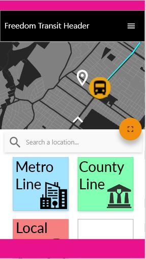

Early
Designs.

Susan M. Weinschenk’s book, 100 Things Every Designer Needs to Know About People and Don Norman's The Design of Everyday Things, had a substantial influence on the Freedom Transit project design. While the design is still not fully complete, the viewpoint of both authors on design has been greatly considered along the process on properly implementing a design process that is user friendly. However, I will also stand by the argument that design is subjective based on the user and it also cannot be brought to a quantitative science.
The Yerkes-Dodson Law states that when someone’s arousal increases, so does performance, but only to a certain degree. This optimal amount of stress is based on task difficulty. Weinschenk exclaims that typically, the simpler the task, the more arousal it will take to reach peak performance before performance begins to plummet. This law helps explain why when frustrated, performance may lack under what is called “tunnel action.” This is when the same task is repeated multiple times with the same failed outcome.
Now that we know a stressed user is a clumsy user, we must analyze the three “loads” of Fitt's Law that humans encounter: cognitive, visual and motor loads. These are demands that a person may take to complete a task successfully. Cognitive loads regard memory and brain function, visual loads are eye movements and perception and motor loads are movement of the hands or other necessary body parts. These loads values or mental resources may vary by person, and some may value their cognitive ability more than their motor ability and vice-versa.
Our first attempt to reduce human error took advantage of human tendencies to lean towards categorization. Organizing data or touchpoints for users was found to successfully help improve user experience since what users interact with on a physical level is directly correlated with their mental model. This way, we introduced a system that recognizes the day through JavaScript and hides categories based on the day. This way, we reduce human error by categorizing bus routes to specific days that they are active.
Another design tactic we used was one that is popular in modern psychology of operant conditioning. Similar to B.F. Skinner’s operant chamber, rewards for certain behavior can vary widely at different rates. We took these studies to implement a system of rewards for feedback from the bus on the map in the web app. Our bus refresh rate is a variable interval between 3000ms and 5000ms. We see similar addictive variable interval uses in email and app notifications.